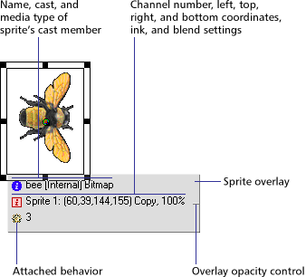
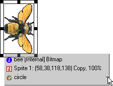

Using Director > Sprites > Displaying and editing sprite properties > Using the Sprite Overlay
Using Director > Sprites > Displaying and editing sprite properties > Using the Sprite Overlay |
Using the Sprite Overlay
The Sprite Overlay displays important sprite properties directly on the Stage. You can open editors, inspectors, and dialog boxes to change sprite properties by clicking the corresponding icons in the Sprite Overlay.
To display the Sprite Overlay when a sprite is selected:
Choose View > Sprite Overlay > Show Info.

To use Sprite Overlay options to change how the overlay appears:
1 |
Click the Sprite on the Stage to select it. |
2 |
In the Sprite Overlay panel, click the icon that represents the data you want to edit: |
To edit the Sprite's cast member, click this icon to open the tab in the Property Inspector that applies to this type of sprite. For example, clicking this icon displays the Vector tab for a vector sprite, the Text tab for a text sprite, and so on.
|
|
To open the Sprite tab of the Property Inspector, click this icon.
|
|
To open the Behavior tab of the Property Inspector, click this icon. (See Behaviors overview.)
|
|
To change the Sprite Overlay's appearance to suit your preferences:
1 |
Choose View > Sprite Overlay > Settings. |
2 |
Choose a Display option to determine when sprite properties are visible and active: |
Roll Over displays sprite properties only when the pointer is over a single sprite. |
|
Selection displays sprite properties when a sprite is selected. |
|
All Sprites displays sprite properties for all sprites on the Stage. |
|
3 |
Use the Text Color box to select the color for text displayed in the Sprite Overlay. |
To change the opacity of the Sprite Overlay panel:
Drag up or down the small thin line that appears on the right edge of the Sprite Overlay panel.
